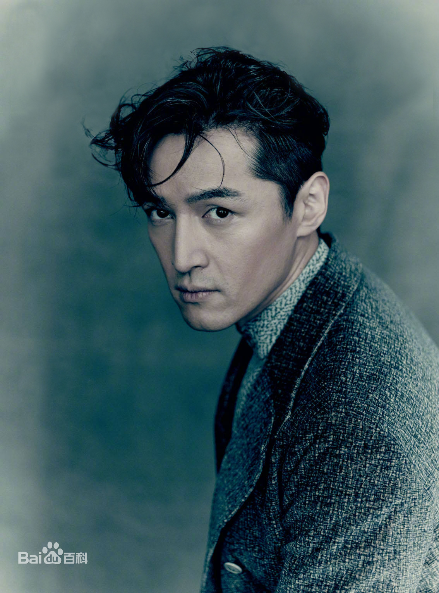
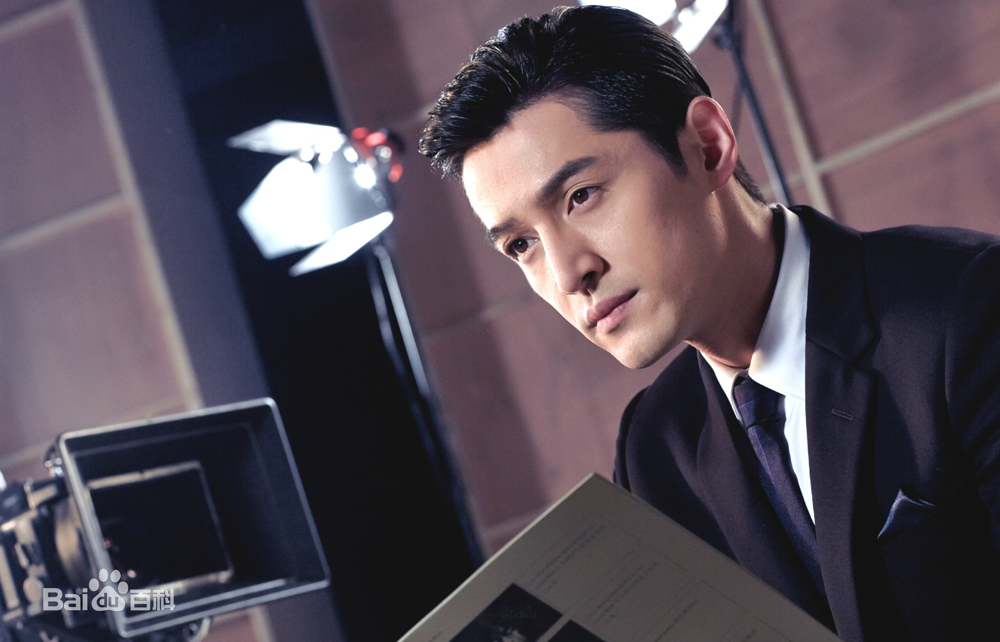
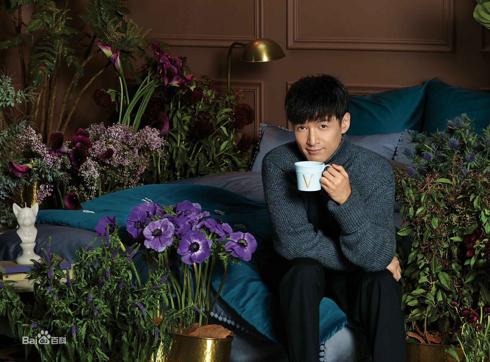

胡歌，1982年9月20日出生于上海市徐汇区，中国内地男演员、歌手，民盟盟员
1996年，14岁的胡歌便成为上海教育电视台的小主持人，2005年毕业于上海戏剧学院表演系，同年在仙侠剧《仙剑奇侠传》中塑造了“李逍遥”一角，并演唱该剧插曲《六月的雨》《逍遥叹》。2006年8月遭受严重车祸，2007年6月复出 。2009年主演仙侠剧《仙剑奇侠传三》，并演唱片尾曲《忘记时间》2010年主演的穿越剧《神话》在央视八套播出 。2011年参演历史题材电影《辛亥革命》提名大众电影百花奖“最佳新人奖” 。2012年主演玄幻剧《轩辕剑之天之痕》 。2013年主演两部话剧，凭借《如梦之梦》获得北京丹尼国际舞台表演艺术奖“最佳男演员奖” 。2014年参演战争剧《四十九日·祭》提名上海电视节白玉兰奖“最佳男配角奖” 。2015年主演的谍战剧《伪装者》、古装剧《琅琊榜》、都市剧《大好时光》相继播出，获得中国电视剧飞天奖“优秀男演员提名奖”、上海电视节白玉兰奖“最佳男主角奖”、中国电视金鹰奖“观众喜爱的男演员奖”、中国金鹰电视艺术节“最具人气男演员奖”等奖项 。2016年登上央视春晚演唱歌曲《相亲相爱》 。2017年二度登上央视春晚演唱歌曲《在此刻》，获得共青团中央“全国向上向善好青年”崇义友善好青年称号，2018年凭借《猎场》二度提名上海电视节白玉兰奖。“最佳男主角奖” 。
胡歌小学就读于上海市向阳小学，初中就读于上海市第二中学初中部95级1班，高中就读于上海市第二中学高中部98级3班、高中部01届7班。胡歌在小学阶段曾经是戴三道杠的大队委员，在中学阶段还担任校升旗仪式主持人、校广播台台长、校戏剧社社长、校合唱团团长、班级团支书、班级物理课代表、徐汇区学生话剧团负责人，还参与了中央电视台《正大综艺》节目主题歌《爱的奉献》MV的拍摄。
1996年，上海教育电视台面向上海滩招聘中学生主持人，胡歌成功突围而出，当选该台《阳光少年》栏目主持人，并且在这个小主持人的行业上做了几年。同时，他曾在上海东方广播电台身兼多个栏目的主持人和记者，做过杂志的学生编辑，在徐汇区少年宫话剧社演出的话剧《红手绢的故事》获得了上海市第二届学生艺术节话剧专场一等奖，还在电影《国歌》中露脸，并参与了动画电影《宝莲灯》的配音1996年，上海教育电视台面向上海滩招聘中学生主持人，胡歌成功突围而出，当选该台《阳光少年》栏目主持人，并且在这个小主持人的行业上做了几年。同时，他曾在上海东方广播电台身兼多个栏目的主持人和记者，做过杂志的学生编辑，在徐汇区少年宫话剧社演出的话剧《红手绢的故事》获得了上海市第二届学生艺术节话剧专场一等奖，还在电影《国歌》中露脸，并参与了动画电影《宝莲灯》的配音。
